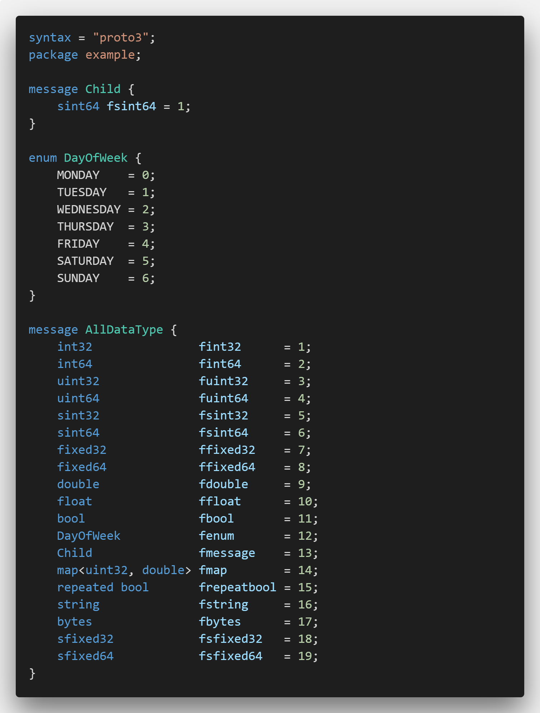
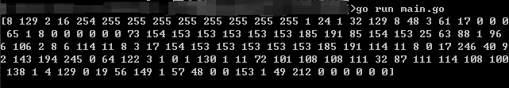
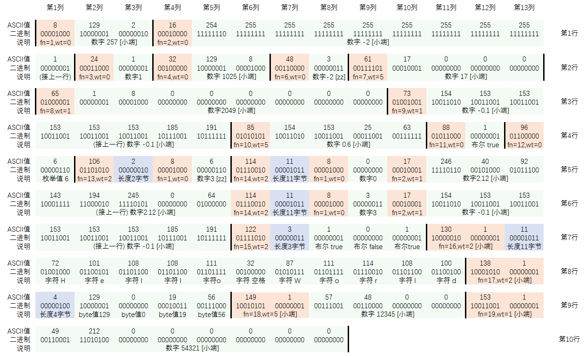
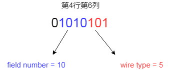
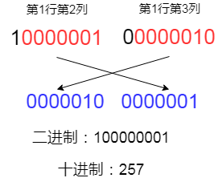
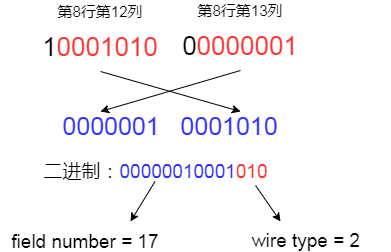

通过一个完整例子彻底学会protobuf序列化原理
![Scan me!]()
![Scan me!]()
通过一个完整例子彻底学会protobuf序列化原理
背景
Protobuf是我们在网络传输中经常会用到的协议，优点是版本间兼容性强，对数据序列化时的极致压缩使得Protobuf包体积比xml、json等格式要小很多，节约流量。对于pb协议的具体使用方法，其官网有比较详细的说明，本文不再详述。我们的数据不管在代码中是什么复杂结构体，传输时都要序列化成二进制串。官网中也介绍了Protobuf的序列化算法，不过给的例子比较简单，学习起来不够直观。因此，本文用一个较为完整的例子直观展示一下Protobuf的序列化，一个例子即可搞懂Protobuf的序列化算法。
一个完整的Protobuf举例

这个例子有一个特点，就是AllDataType这一结构体中包含了Protobuf所支持的全部数据类型。下一步，使用protoc编译该proto文件，并在程序中声明一个AllDataType类型的数据，将其序列化，并打印出来。下面的代码是以golang为例：
package main
import (
"fmt"
"<path-to>/example"
"github.com/golang/protobuf/proto"
)
func main() {
test := example.AllDataType{
Fint32: 257,
Fint64: -2,
Fuint32: 1,
Fuint64: 1025,
Fsint32: 0,
Fsint64: -2,
Ffixed32: 17,
Ffixed64: 2049,
Fdouble: -0.1,
Ffloat: 0.6,
Fbool: true,
Fenum: example.DayOfWeek_SUNDAY,
Fmessage: &example.Child{Fsint64: 3},
Fmap: map[uint32]float64{3: -0.1, 0: 2.12},
Frepeatbool: []bool{true, false, true},
Fstring: "Hello World",
Fbytes: []byte{129, 0, 19, 56},
Fsfixed32: 12345,
Fsfixed64: 54321,
}
data, _ := proto.Marshal(&test) // protobuf将结构体序列化为二进制串
fmt.Println(data) // 打印AllDataType类型的数据序列化后的二进制串
}最后一行打印的结果为：

序列化结果分析
接下来就是最关键的一幅图，我们逐个字节地来分析一下上面的打印结果中，每个字节所代表的含义（可查看大图）：

【1】图中橙色部分（如第1行第1列，第1行第4列）用于表示字段field number（简写为fn）以及wire type（简写为wt）。其中field number是proto文件中标注的该字段数字代号，而wire type表示本字段的数据类型属于哪种归类，这些归类主要用于提醒反序列化程序如何判断本字段值占据几个字节。Wire type值与数据类型的映射关系为：
Wire Type | 解释 | 数据类型 |
|---|---|---|
0 | varint变长整型（见下文） | int32, int64, uint32, uint64, sint32, sint64, bool, enum |
1 | 固定8字节 | fixed64, sfixed64, double |
2 | 需显式告知长度（见下文） | string, bytes, 嵌套类型（embedded messages），repeated字段 |
3 | （已废弃） | （已废弃） |
4 | （已废弃） | （已废弃） |
5 | 固定4字节 | fixed32, sfixed32, float |
因为wire type种类很少，为了进一步节约字节，write type只用了3个bits来表示，而fn则使用更高位来表示：

【2】参考【1】中的表格，大部分整数类型的wire type都是varint变长整型。Varint简单说就是每个字节最高位不用来表示具体数值，只用来表示“本字节是不是这个数字的最后一个字节”。0表示最后一个字节，1表示不是最后一字节、后面还有。因此如果要把varint还原为普通的二进制表示，需要去掉最高bit，把剩下的7个bit组合起来看。一图胜千言：

需要注意protobuf的varint采用类似小端模式，因此图中第1行第3列存的是高位，第2列是低位，转化十进制过程中需要把他们调换一下位置，其他使用varint的类型也是类似机制。
【3】注意从第1行第5列到第2行第1列，所存储的数字是int64类型的-2，占据10个字节，这甚至比不使用varint所占的空间还要大。主要原因是负数在计算机中采用补码存储，int类型-2本来存储上就等同于一个特别大的unsigned int，需要用很多字节去存储，而varint还把每字节8bits最高位用来干别的事情，不用来表示数值了，导致每个字节都少了一个可用的bit位。这里也可以看出只使用varint的弊端，对于int类型的负数（或unsigned int类型的特别大正数），完全没有起到节约字节数的效果。因此protobuf中出现了sint32和sint64类型，该类型使用ZigZag来优化。ZigZag规则为，如果是负数，则存储其绝对值的2倍减1；如果为非负数，则存储其绝对值的2倍。这样就可以把int类型1对1映射为unsigned int类型。这一规则对应图中的第2行第8列，数字-2其实二进制存储的是正整数3（[zz]表示ZigZag）。
ZigZag的优化主要基于一个事实：我们在传输数据时，所传的整数大多是和0比较接近的小正数或者小负数，很少传输绝对值特别大的负数或正数。满足这一事实的场景下，推荐把protobuf中的int32和int64都替换为sint32和sint64，节约字节数。
【4】Varint和ZigZag方法其实没有优化绝对值特别大的数。例如如果要传输的数字是int32最大值2147483647，本来是4个字节，使用varint反而需要5个字节了。因此，fixed32和fixed64类型就是为这种场景设计。这种情况下，数字直接按照它的二进制表示进行序列化，固定占用4字节或8字节，例如图中的第3行第2列到第9列，表示的是2049。由于2049是一个比较小的整数，因此会有很多0来填充空余字节，比较浪费。
【5】Protobuf表示浮点数的类型是double（8字节）和float（4字节）。浮点数也是直接按照它的二进制表示进行序列化。例如第4行第7列至第10列，4字节浮点数0.6被序列化为 [154 153 25 63] （小端模式ASCII码），这正是0.6在内存中的存储方式。至于怎么算出来的，不再详细展开，可以参考链接。
【6】Protobuf序列化时会直接忽略为空值的字段，例如fn=5的字段根本没有在图中出现，主要原因是fn=5的字段Fsint值为0，属于空值（默认值）。直接忽略可进一步节约字节数。
【7】图中的浅紫色字段表示的是字段长度，它专属于wire type=2的字段。当wire type=2时，protobuf并不知道对应的值到底占据几个字节，需要在fn和wt后面紧跟一个长度数字。需要注意的是字段长度数值也属于varint表示的无符号整型。
【8】对于在proto文件中用repeat修饰的字段，值部分会连续出现多次，如第7行第6列到第10列。一般repeat字段都被当成数组。
【9】注意第8行第12列和第13列，当fn大于15时，一个字节已经不足以序列化fn+wt部分了，这时fn+wt会被当成一个数字，按照varint的形式来序列化。

因为fn大于15的字段需要至少2个字节来存储fn+wt，protobuf建议，把fn小于16的值留给最常用字段，以节约字节数。
最后，总结一下在Protobuf协议定义时，怎样选取合适的整数类型：
（1）有符号整型，大多数值都不算很大（4字节绝对值小于2^27，8字节绝对值小于2^55），使用sint32和sint64
（2）有符号整型，大多数值都特别大（4字节绝对值大于2^27，8字节绝对值大于2^55），使用sfixed32，sfixed64
（3）无符号整型，大多数值都不算很大（4字节绝对值小于2^28，8字节绝对值小于2^56），使用uint32和uint64
（4）无符号整型，大多数值都特别大（4字节绝对值大于2^28，8字节绝对值大于2^56），使用fixed32和fixed64
（5）有符号整型，绝大多数数值都是不算很大的正数（4字节绝对值小于2^27，8字节绝对值小于2^55），但在极少数情况下可能出现负值，使用int32和int64。
原创声明，本文系作者授权腾讯云开发者社区发表，未经许可，不得转载。
如有侵权，请联系 cloudcommunity@tencent.com 删除。
相关文章
精选专题
活动推荐
关注
腾讯云开发者公众号
将获得
10元无门槛代金券
洞察腾讯核心技术
剖析业界实践案例
好文章，胜读其它十多篇甚至更多关于protocol buf的文章~